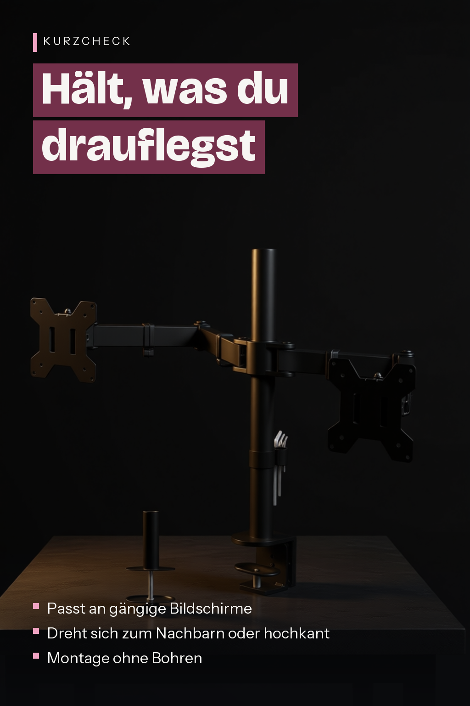

BONTEC Monitor Halterung 2 Monitore für 13-27 Zoll, 10 kg pro Arm
BONTEC
BONTEC Monitor Halterung 2 Monitore für 13-27 Zoll, 10 kg pro Arm, Schwarz

Angaben des Herstellers
- Stabile Stahl-Doppelarm-Monitorhalterung: Montage von zwei Bildschirmen nebeneinander, um Platz auf dem Schreibtisch zu schaffen. Für zwei 13"-27" Fernseher oder Monitore mit einer maximalen Tragfähigkeit von 10 kg pro Arm.
- Universal Monitor Halterung: Passend für alle Flachbildschirme und TV-Geräte mit VESA-Größen von 75 x 75 mm oder 100 x 100 mm (Bitte stellen Sie sicher, dass Ihr Bildschirm mit dieser Monitor Halterung kompatibel ist, indem Sie die Anleitung überprüfen oder den Abstand zwischen den 4 Löchern auf der Rückseite des Bildschirms messen); VESA-Platten sind schnell angebracht und abnehmbar für eine einfache Installation.
- Hervorragende Flexibilität: Mit einer Neigung von +90°/-90°, um 180° schwenkbar und 360° drehbar für hervorragende Flexibilität; maximale Armverlängerungslänge von 430 mm, höhenverstellbar für optimalen Betrachtungswinkel; Unsere Monitor Halterung 2 Monitore ist ideal für Multitasker, Designer, Programmierer, Gamer gleichermaßen.
- 2 Montagemöglichkeiten: 1) Tischklemme: robuste C-Klemme (passend für Schreibtischdicke zwischen 10 mm und 100 mm) bietet höchste Stabilität, hält Ihren Bildschirm fest und sicher an Ort und Stelle; 2) Bodenbefestigung für Schreibtische mit Durchbohrloch (Lochdurchmesser unterstützt min.10 mm-max.85 mm); die Tischplatte unterstützt Schreibtischdicke von 10 mm bis 70 mm.
- Kabelmanagementsystem: Verdeckte verkabelung hält Ihren Schreibtisch ordentlich und sauber; Aufbewahrungsfach für Inbusschlüssel. Kommt komplett mit Anleitung (evtl. nicht in deutscher Sprache), alle erforderlichen Befestigungen und Befestigungen für eine einfache Installation.
Werbung. Diese Seite enthält Partnerlinks: Als Amazon-Partner verdiene ich an qualifizierten Käufen. Für dich ändert sich nichts am Preis. Preise und Verfügbarkeit stehen bei Amazon und ändern sich laufend.